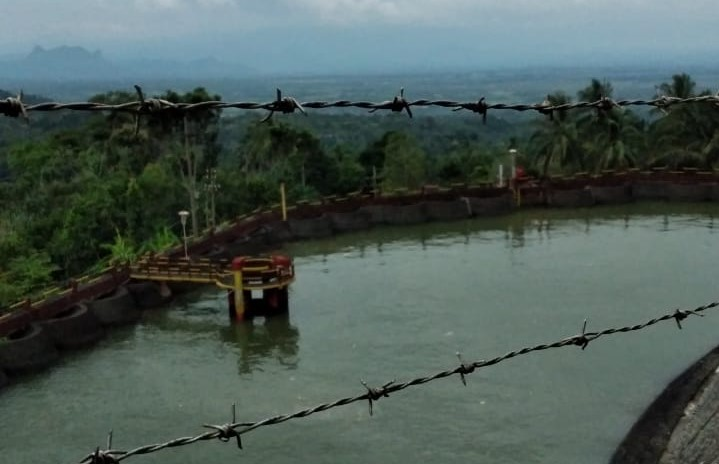
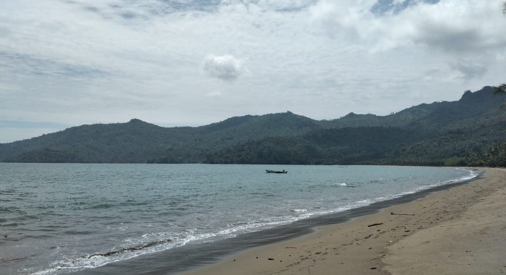

Tanjung Benoa
(2019)

Tanjung Benoa berada pada Kabupaten
Badung, Bali. Pertama kali kesini,
membuat saya merasakan segarnya
daerah wisata yang berada di tengah
kota. Perjalanan kurang lebih 30 menit
dari Hotel. Saya juga tidak lupa untuk
mengunjungi Pulau Penyu.

Butuh waktu sekitar 30 menit kesana dengan
menggunakan perahu boat. Perairan Laut sedikit
dangkal, jadi saya bisa melihat ikan kecil-kecil
yang ada disana. Banyak kapal-kapal yang
ditinggalkan begitu sajadi perairan, entah karena
apa saya juga tidak bertanya. Kalau kesini
apalagi saat terik dan kemarau diharap membawa
topi maupun memakai sunscreen karena
panasnya ultraviolet.
Telaga Ngebel
(2021)
Telaga Ngebel berada pada Kabupaten Ponorogo
Jawa Timur. Jarak tempuh menggunakan motor
kurang-lebih 45 menit dari rumah saya.
Disini sejuk sekali karena ya memang telaga
berada ditengah (dikelilingi) oleh gunung-gunung.
Banyak sekali warung-warung maupun tempat
penginapan yang ada disini. Menu yang menjadi
highlight disini yaitu ikan bakar dan saya yakin rasanya sangat nikmat.

Sebelum sampai ke Telaga Ngebel, para pengunjung
pasti melewati sebuah PLTA yang berada di
Desa Wagir Lor. Banyak sekali pengunjung yang
berhenti sejenak untuk menikmati dinginnya udara
disambi dengan suara air dari PLTA. Dapat juga
berfoto-foto untuk bisa dijadikan kenangan.
Pantai Damas
(2019)
Pantai Damas berada pada Kabupaten Trenggalek, Jawa Timur. Jarak tempuh bisa menghabiskan
3 jam dari kota saya. Disini masih dibilang
natural sekali tempatnya. Pantainya juga
tidak panas, dan tidak ada sampah. Tempatnya
sangat sejuk untuk ukuran pantai. Karena,
kemungkinan pantai ini belum terjamah manusia,
jadi saat tiba dilokasi memang tidak banyak pengunjung. Jalanannya pun juga mulus,
melewati perbukitan, gunung, lalu persawahan dan rumah-rumah penduduk.

Ombak laut juga tidak terlalu besar, maka dari itu kalau mau main agak ketengah pantai masih bagus tapi jangan lupa untuk hati-hati. Kalau kesini lebih baik bawa bekal sendiri, karena masih belum banyak warung-warung yang ada dipinggiran pantai. Terdapat banyak sekali gazebo yang bisa digunakan untuk duduk sejenak, maupun istirahat untuk menikmati keindahan pantai.